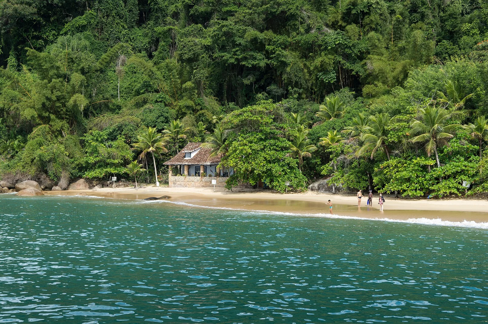

Baie de Paraty
Rio de Janeiro, Brésil · kayak, paddle, snorkeling, baignade

Ville coloniale au bord d’une baie parsemée d’îles et de plages, entre mer et forêt atlantique. Les eaux calmes se prêtent au kayak, au paddle et aux sorties en bateau vers les criques.
- Lieu
- Rio de Janeiro, Brésil
- Niveau
- Débutant
- Activités
- kayak, paddle, snorkeling, baignade
- Type d'eau
- Mer / océan
- Coordonnées
- -23.22, -44.71 (position approximative du secteur)
Dangers à connaître
- Nombreux bateaux de promenade (escunas) dans la baie.
- Orages et fortes pluies en été : eau troublée et rafales soudaines.
Le conseil d'Ocean Buddy
Pars tôt le matin, avant la brise et le va-et-vient des bateaux de promenade.
Ouvrir dans Ocean Buddy Télécharger sur l'App Store
Source : Fiche Ocean Buddy · septembre 2026 · à vérifier localement.